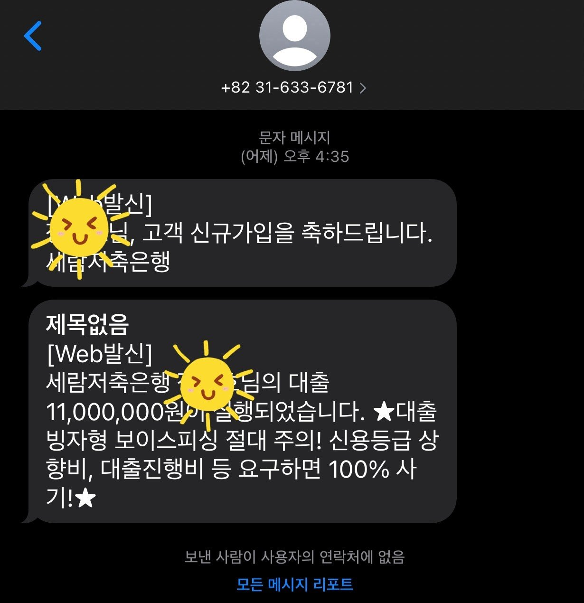

[개인회생자대출] 개인회생대출 오늘 성공했습니다.
뱅크앤론을 알게되어 정말 고맙고 감사한 하루가 된거같습니다.
저는 개인회생을 60회차중 57회차 납부하였던 상황에
가계대출이 시급한 상황이었고 기대출 대부쪽 600정도가 있었고 꾸준히 상환중에 있었습니다. 대부대출이라 이율도 높은편이었구요. 급히 500정도가 필요한 상황에 뱅크앤론의 도움으로
금일 세람저축은행에서 1100만원 승인이 나왔습니다.
대부대출 잔액560정도에 회생미납금 40여만원가량 상환조건으로 나머지금액 대출금액이 입금되었습니다.
직장인4대보험
개인회생 60회차중 57회납부
연봉4천미만
미납 연체없고 사금융없습니다.
그리고 대부대출에서 저축은행으로 갈아탄것도 오늘 큰수확이었던거같네요. 대략 기존 25프로이율에서 현재17프로가량 되었구요.
제경우 조만간 3개월후 개인회생납부끝나는시점에서 면책신청후 일반직장인대출로 더좋은 조건으로 대출상품도 알아봐주신다고 하셨습니다.
대출이란게 없으면 좋겠지만 살다보면 세상 아쉬울때도 있는법이라 오히려 이럴때 현명하게 금융쪽으로 대비하는 자세가
나중에 좋은 방향으로 나아갈 수 있는 지름길이 될 수 있는거기에 잘만 이용하면 유익하다는 견해입니다.
뱅크앤론 유미광상담사님의 조언대로 금일 진행하였던
대출신청서류에서부터 승인에 이르기까지 발빠르게 속전속결로 명확하게 이루어지고 또한 정말 시간낭비없이 말끔히 진행되었던거같네요. 근무중에 있었음에도 바쁜와중에 잠깐잠깐
휴식시간마다 짬내서 했는데도 잘 설명해주신탓에 크게 막힘없이 서류제출하고 승인까지 문제없었습니다.
다시한번 금일 대출승인까지 도움주셨던 뱅크앤론 유미광 상담사님께 감사의 말씀 전해드리고 싶습니다.
다시한번 감사드리며 조만간 연락드리겠습니다. 오늘 수고해주신점 정말 감사드립니다. 그럼 또 뵈요~~~^^ 화이팅!!

https://cafe.naver.com/cityman88/286514